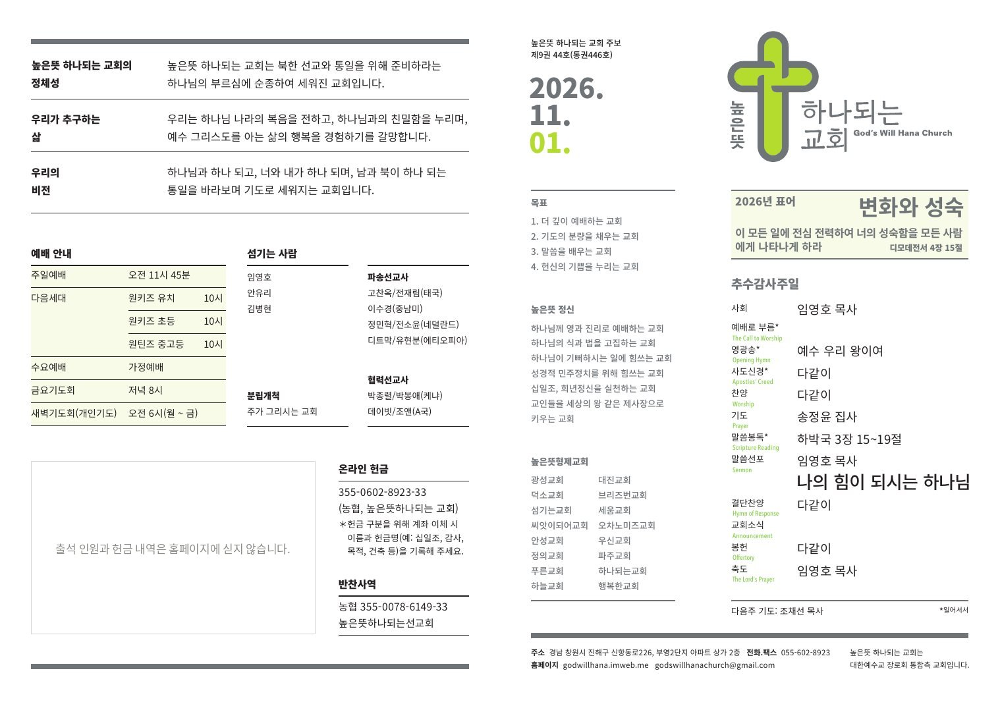
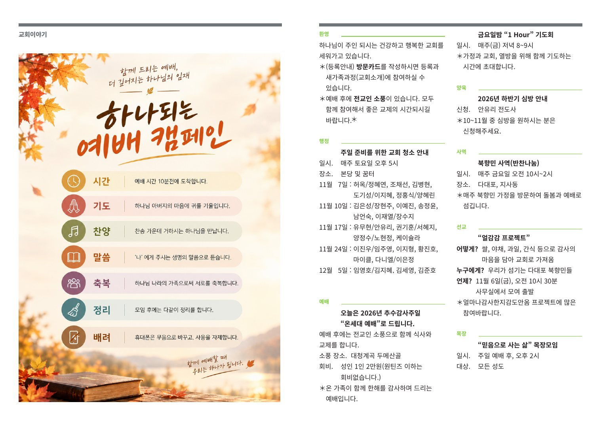

2026년 표어
변화와 성숙
이 모든 일에 전심 전력하여
너의 성숙함을 모든 사람에게 나타나게 하라
디모데전서 4장 15절
- 1더 깊이 예배하는 교회
- 2기도의 분량을 채우는 교회
- 3말씀을 배우는 교회
- 4헌신의 기쁨을 누리는 교회

예배와 말씀
One in God, One in Love, One Korea
하나님과 하나 되고, 너와 내가 하나 되며, 남과 북이 하나 되는 교회

높은뜻 정신
모든 예배로 하나님께 영광을, 성도에게 충만한 은혜를.
모든 예배를 통하여 하나님은 영광 받으시고 모든 교인들은 충만한 은혜를 받게 하는 것이 높은뜻 교회의 목표입니다.
높은뜻은 High Will이 아니라 God’s Will입니다.
우리는 하나님의 뜻이 이 땅에서 이루어지게 하는 것이 교회의 목표입니다.
하나님이 지금 가장 하고 싶어 하시는 일에 힘씁니다.
높은뜻 교회는 하나님이 좋아하시는 음식이 가득한 잔칫상을 차려드리는 것처럼 하나님이 지금 가장 하시고 싶어 하시는 일들을 하려고 노력하고 있습니다.
차별 없는 장로정치와 협동 목회를 추구합니다.
높은뜻 교회는 교회의 민주주의 정치를 추구합니다. 하나님이 주인이 되시기 위해 성도들 사이에 그 어떠한 차별도 없는 올바른 장로정치와 전문 분야의 목회가 균형을 이루는 협동 목회를 추구합니다.
온전한 십일조, 예산의 1/3 이상은 교회 밖으로.
물질과 재산의 주인이 자신이 아니라 하나님이라는 고백의 실천으로써 온전한 십일조 생활을 중히 여깁니다. 희년재단을 통하여 희년정신을 실현하며 교회 예산의 1/3 이상을 교회 밖을 위하여 사용하려 합니다.
모든 직업은 성직, 각자의 자리에서 세상을 섬깁니다.
높은뜻 교회는 하나님이 주신 모든 직업을 다 성직으로 이해합니다. 교인 모두가 다 자기 전문적인 직업 영역에서 왕 같은 제사장이 되어야 함을 믿습니다. 교인들이 세상을 섬기기를 원합니다.
교회소식

선교소식
감사의 마음을 담아 교회로 가져와 주세요. 우리가 섬기는 북향민 이웃에게 전합니다. 사무실에서 모여 출발합니다.
양육
10~11월 중 원하시는 분은 안유리 전도사에게 신청해 주세요.
목장
주일 예배 후 오후 2시, 모든 성도
기도
매주 금요일 저녁 8~9시, 가정과 교회와 열방을 위해
| 제목 | 작성일 |
|---|---|
| 2026년 11월 1일 주보 (통권 446호) | 2026.11.01 |
| 2026년 10월 25일 주보 (통권 445호) | 2026.10.25 |
| 2026년 10월 18일 주보 (통권 444호) | 2026.10.18 |
| 2026년 10월 11일 주보 (통권 443호) | 2026.10.11 |
선교
환영합니다


높은뜻 하나되는 교회에 처음 오신 분들이 가장 많이 하시는 질문과 답변을 정리했습니다.
더 궁금하신 점은 예배 후 안내석이나 교회 사무실로 편하게 문의해 주세요.


이미지를 누르면 다음 면으로 넘어갑니다